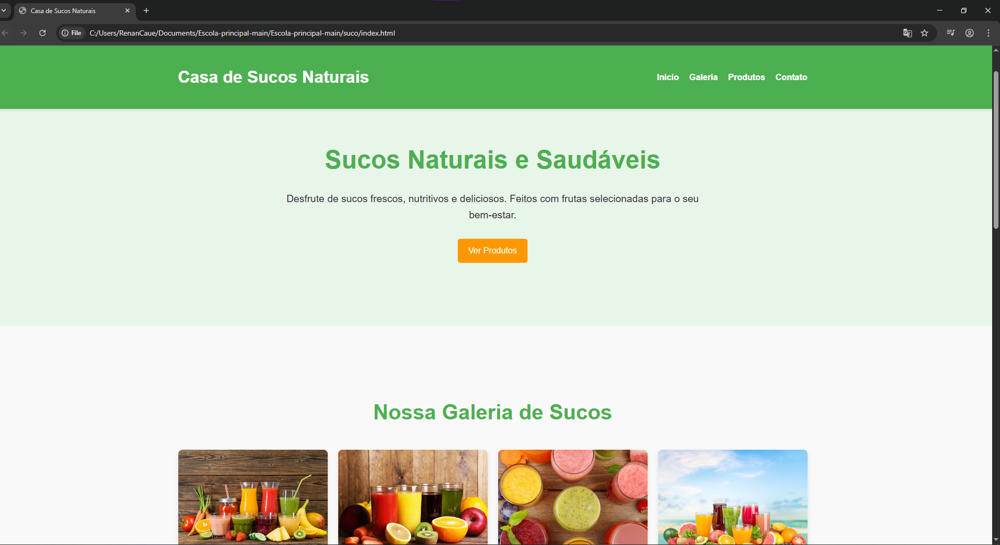

PROJETOS
Projeto 1
Casa de Suco — um projeto simples e elegante criado em HTML e CSS que mostra como listas podem transformar a apresentação de um cardápio. Usei marcação semântica (listas ul/ol) para estruturar itens como sabores, combos e preços; no CSS aprimorei a aparência com bullets personalizados, espaçamento consistente, tipografia legível e cores que lembram frutas frescas. Adicionei interações sutis — hover, transições e estados ativos — para melhorar a usabilidade, além de responsividade para que o cardápio funcione bem em celular e desktop. O resultado é um componente reutilizável, acessível e fácil de manter, que deixa o conteúdo mais convidativo e profissional para quem visita a “Casa de Suco”.
Projeto 2
Snowboard — projeto que desenvolvi em HTML e CSS enquanto estava aprendendo a trabalhar com listas. Nele organizei informações sobre modalidades, equipamentos e curiosidades usando listas ordenadas e não ordenadas. O foco foi praticar a estruturação dos conteúdos e depois aplicar personalizações no CSS, como trocar os marcadores, ajustar cores e espaçamentos para deixar tudo mais organizado e visualmente atrativo. Foi um exercício simples, mas que me ajudou a entender melhor como listas podem ser usadas para apresentar informações de forma clara e estilizada.

Contato
Entre Contato
WhatsApp: 14 99120-5152 / 14 99881-0241
Instagram: rnprojetos
Teleone: 14 99120-5152
Gmail: rnprojetosnextage@gmail.com